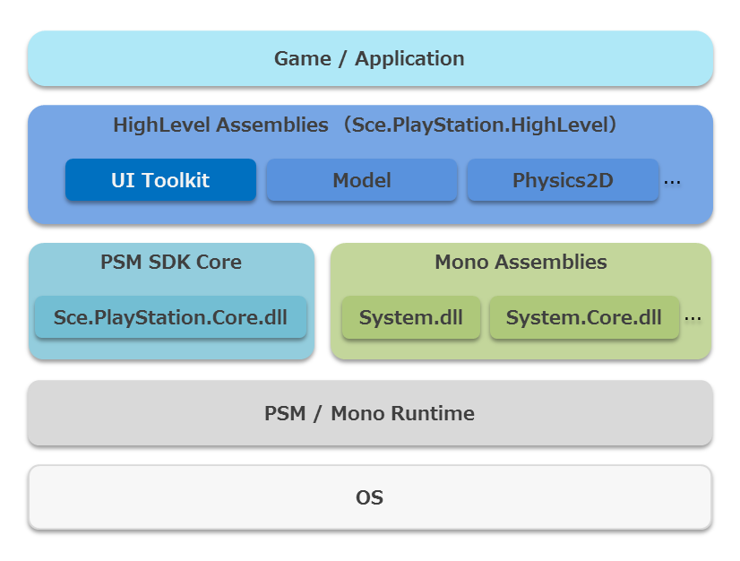
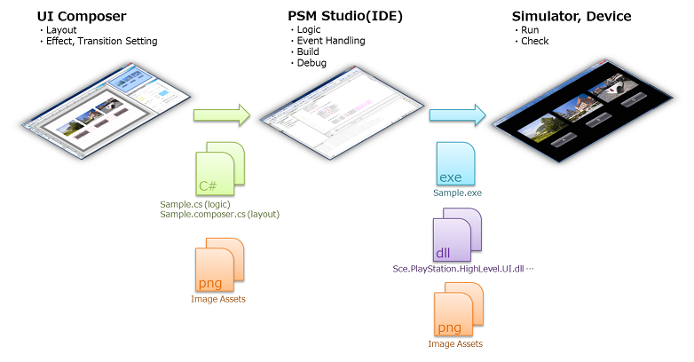

Contents
UI Toolkit は、PSM 上でユーザーインターフェース (UI) を作成するための仕組みや部品をまとめたライブラリです。 ゲームのメニューやヘッドアップディスプレイで利用したり、UI Toolkit 単独でもゲーム以外の一般的なアプリケーションも構築できるように設計・実装されています。
UI Toolkit の主要機能は下記の通りです。
- UI部品(Widget)
- アニメーション効果(Effect, Transition)
- タッチ入力のジェスチャ解析
- 画像アセットの管理
- UI部品の 3D シーングラフ
- ゲームと組み合わせた描画
Widget や Effect、Transition には、標準的な部品や効果に加えて、PSM 独自のものも用意しています。
UI Toolkit は、Sce.PlayStation.Core ライブラリの上位に位置するライブラリで、Sce.PlayStation.Core ライブラリと Mono の標準ライブラリにのみ依存します(図1)。
図1 PSM のアセンブリスタック
UI Toolkit には、レイアウトを行うツール UI Composer が付属しています。このツールを利用することで、ボタンやテキストなどの Widget のレイアウトやプロパティ設定、多言語対応など、UI 画面のデザイン作業を効率よく進めることが可能になります。 ツールで作業した結果は C# のソースコードとして出力され、ゲームやアプリケーションのプロジェクトに簡単に取り込むことが可能です(図2)。
図2 UI Composer を利用した UI 開発の流れ
UI Toolkit のアセンブリ、サンプルプログラム、ソースコード、既定の画像アセットはそれぞれ標準で下記の場所にあります。
アセンブリ
- Windows XP/7 32-bit: "C:/Program Files/SCE/PSM/mono/lib/psm/Sce.PlayStation.HighLevel.UI.dll"
- Windows XP/7 64-bit: "C:/Program Files (x86)/SCE/PSM/mono/lib/psm/Sce.PlayStation.HighLevel.UI.dll"
サンプル
- Windows XP: "C:/Documents and Settings/All Users/Documents/PSM/sample/UI/"
- Windows 7: "C:/Users/Public/Documents/PSM/sample/UI/"
アセンブリのソースコード
- Windows XP: "C:/Documents and Settings/All Users/Documents/PSM/source/UI/"
- Windows 7: "C:/Users/Public/Documents/PSM/source/UI/"